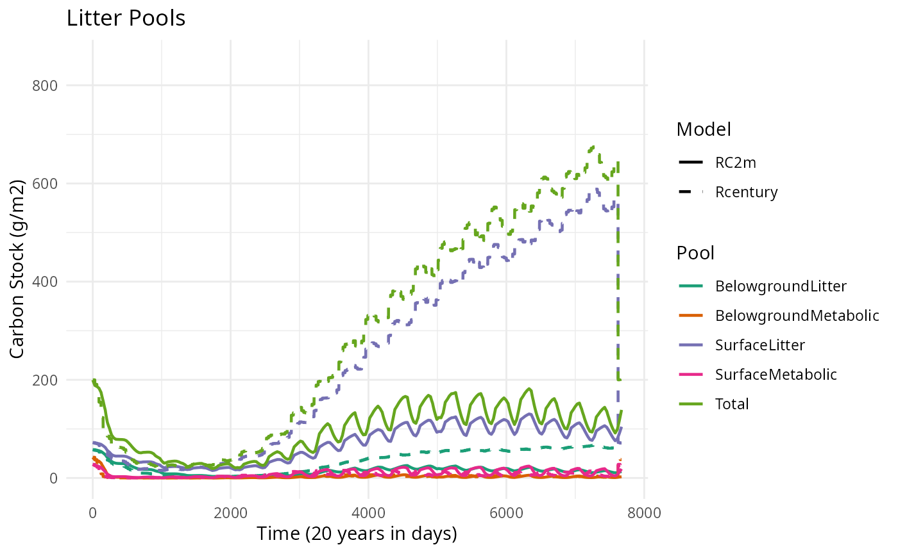
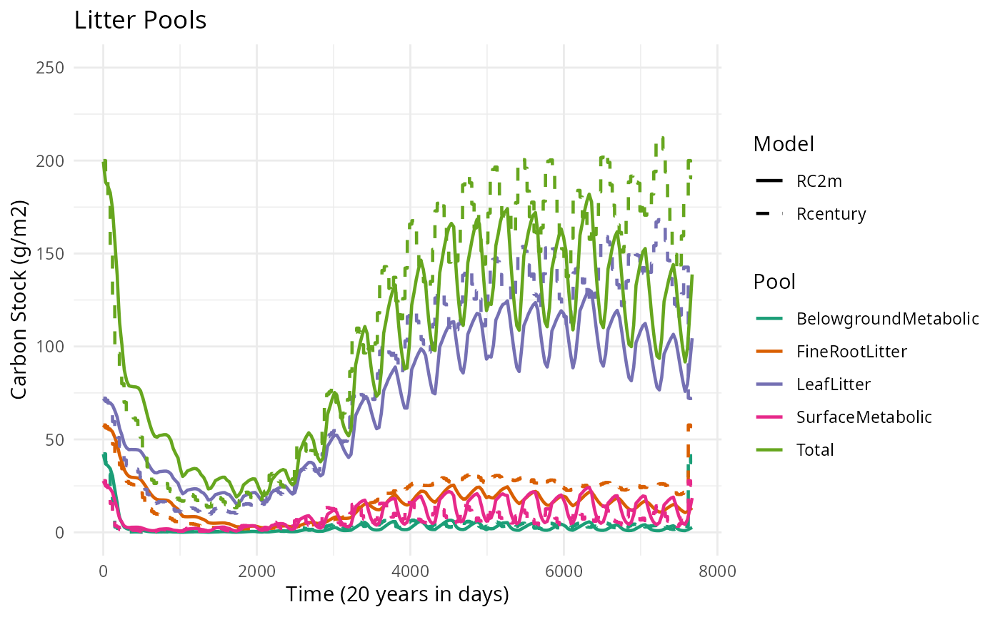

Verification of carbon decomposition (DAYCENT)
Inés Delsman Valderrama (CREAF), Miquel De Cáceres (CREAF)
2026-05-03
Source:vignettes/evaluation/CENTURYVerification.Rmd
CENTURYVerification.RmdInitial surface/soil plant residue
In the Duke example, surface structural = 72 g m2. This value is applied to the leaves pool (strucc(1)).
Additionaly, soil structural = 57.75 g m2. This value is applied to the fine roots pools (strucc(2)).
# Initialize litter pools
nlitter <- 1
strucc1 <- out_duke$strucc.1.[1]
strucc2 <- out_duke$strucc.2.[1]
litterData <- data.frame(Species = as.character(rep(paramsLitterDecomposition$Species[1], nlitter)),
Leaves = as.numeric(rep(strucc1, nlitter)),
Twigs = as.numeric(rep(0, nlitter)),
SmallBranches = as.numeric(rep(0, nlitter)),
LargeWood = as.numeric(rep(0, nlitter)),
CoarseRoots = as.numeric(rep(0, nlitter)),
FineRoots = as.numeric(rep(strucc2, nlitter)))Snags are not relevant at this point in time. No changes will be made.
SOC pools
We took the SOC data from the site.100 file and the surface and soil metabolic data from the output file of our Rcentury simulation of the Duke site.
# Initialize SOC pools
SOM1C1 <- subset(site_d$`organic matter`$df, field == "SOM1CI(1,1)")$value
SOM1C2 <- subset(site_d$`organic matter`$df, field == "SOM1CI(2,1)")$value
SOM2C1 <- subset(site_d$`organic matter`$df, field == "SOM2CI(1,1)")$value
SOM2C2 <- subset(site_d$`organic matter`$df, field == "SOM2CI(2,1)")$value
SOM3C <- subset(site_d$`organic matter`$df, field == "SOM3CI(1)")$value
Metabc1 <- out_duke$metabc.1.[1]
Metabc2 <- out_duke$metabc.2.[1]
SOCData <- c(SurfaceMetabolic = Metabc1, BelowgroundMetabolic = Metabc2, SurfaceActive = SOM1C1, BelowgroundActive = SOM1C2, SurfaceSlow = SOM2C1, BelowgroundSlow = SOM2C2, BelowgroundPassive = SOM3C)The base rates from RC2m have been changed to match the base rates from Rcentury. These can be found in the fix.100 file under the name ‘decx(x)’. As Rcentury does not distinguish between leaves, small branches etc., the base rate for surface structural has been applied to leaves while Twigs, Smallbranches and LargeWood remain unchanges. The same counts for the soil structural. Fineroots has been changed and Coarse roots remain the same.
#Change base rates
baseAnnualRates <- c(SurfaceMetabolic = 14.8, BelowgroundMetabolic = 18.5, Leaves = 3.9 , FineRoots = 4.9, Twigs = 1.8, SmallBranches = 1.5,LargeWood = 0.02 , CoarseRoots = 0.1,SurfaceActive = 6, BelowgroundActive = 7.3, SurfaceSlow = 0.03, BelowgroundSlow = 0.07, BelowgroundPassive = 0.0008)
# baseAnnualRates <- c(SurfaceMetabolic = 14.8, BelowgroundMetabolic = 18.5, Leaves = 3.9 , FineRoots = 4.9, Twigs = 3.9, SmallBranches = 3.9,LargeWood = 3.9 , CoarseRoots = 3.9,SurfaceActive = 6, BelowgroundActive = 7.3, SurfaceSlow = 0.03, BelowgroundSlow = 0.07, BelowgroundPassive = 0.0008)Texture & pH
We took the the sand and clay values (and multiplied them by 100 to obtain the fractions) and the pH value from the site.100 file.
Results
The monthly results from the Rcentury simulation are transformed to daily data to make it comparable to the results from medfate. The results are further divided into total C stock, soil organic matter pools (SOM pools) and litter pools.
Total
The SOM and Litter pools are summed manually to calculate the total C stock for both models. For Rcentury, there is also the option to use the parameter ‘tomres’, which should already include the total C stock. In this case, the manual option was preferable to main.
# Get dimensions
n_days <- nrow(res$DecompositionPools)
n_months <- nrow(out_duke)
# Create data frames with time indices
RC2m_duke <- data.frame(
value = rowSums(res$DecompositionPools[,c(3,8:15)], na.rm = TRUE),
day = 1:n_days,
type = "RC2m"
)
# Calculate days per month (approximately equal)
days_per_month <- rep(round(n_days / n_months), n_months)
# Adjust last month to match exactly
days_per_month[length(days_per_month)] <- n_days - sum(days_per_month[-length(days_per_month)])
# Expand monthly data to daily
Rcentury_duke <- RC_total |>
mutate(
days = days_per_month,
monthly_value = value
) |>
rowwise() |>
mutate(
daily_values = list(rep(monthly_value, days))
) |>
unnest(daily_values) |>
mutate(
day = 1:n(),
type = "Rcentury"
) |>
select(day, value = daily_values, type)
# Combine
combined <- bind_rows(RC2m_duke, Rcentury_duke)
# Plot
ggplot(combined, aes(x = day, y = value, color = type)) +
geom_line() +
labs(title = "Total C stock",
x = "Time (20 years in days)",
y = "C stocks (g/m2)") +
ylim(1400,4500) +
xlim(0,7671) +
theme_minimal()  This figure shows a similar pattern for both models: a small decrease in
the beginning and then a an increase later on. However, RC2m increases
faster than Rcentury and there is a ~500 g/m2 difference in total C
stock.
This figure shows a similar pattern for both models: a small decrease in
the beginning and then a an increase later on. However, RC2m increases
faster than Rcentury and there is a ~500 g/m2 difference in total C
stock.
SOM pool analysis
To further analyze the results, all SOM pools are selected from the models results and compared.
Then we rename the Century pool codes to the names used in Bonan.

This figure shows that the results of both the Rcentury model and RC2m model are very similar, which indicates that the simulation of the SOM pools in RC2m appears to function well.

Structural litter
The Century model only includes leaves and fine roots in the structural pools, while RC2m also includes fine branches, large wood litter and coarse roots. These are included in the Century model, but in the dead wood compartments. Two new simulations of the models are created to compare both models with all structural litter and with only leaves and fine roots.
All structural litter
A new selection of litter data has been made, which adapts the SurfaceStructural pool to include C in dead fine branches and large wood, and the SoilStructural to include coarse roots.

The total litter has improved on the previous version. There are still some differences between the Surface litter and Soil litter pools, but overall less severe than before. Both now also include a total of all pools.
Only leaves
In this simulation, only the leaf litter and !Coarse root! litter pools are selected and shown with the regular Rcentury run.

The difference between RC2m and Rcentury is much less in the structural litter pools (leaf litter) compared to the original litter pool analysis. The Rcentury results are slightly higher, but do show similar patternes.